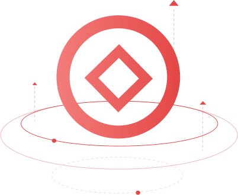
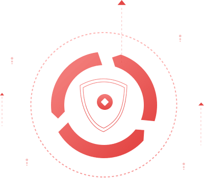

▎专项资产管理
依托集团产业渠道和综合金融优势，充分发挥金融资产和产业投资核心平台作用，凭借充分的项目筛选、完善的投资流程和专业的资产管理能力，延伸资产管理价值链，提升资产价值，实现风险可控的稳健收益，为合作伙伴创造稳健回报。
▎受托资产管理
根据客户第一的原则，运用公司的专业知识、经验以及资源优势，勤勉尽职履行资产受托人义务，辨识具有价值提升空间的资产项目，严格控制风险，努力实现客户资产的保值、增值，最后通过回购、转让、收购或清算等方式最大程度实现资产价值。
▎不良及特殊资产管理
基于不良资产与特殊资产管理领域的丰富经验，充分发挥自身资源整合及价值发现能力，在不良及特殊资产交易、资产项目评估等方面提供尽职调查、风险控制、法律税务、托管重组等服务，通过债务重组、提供流动性支持、输入先进管理、解决历史遗留问题、引入战略合作伙伴等措施充分挖掘和提升核心资产价值，提高资产处置效率，化解风险，实现共赢。